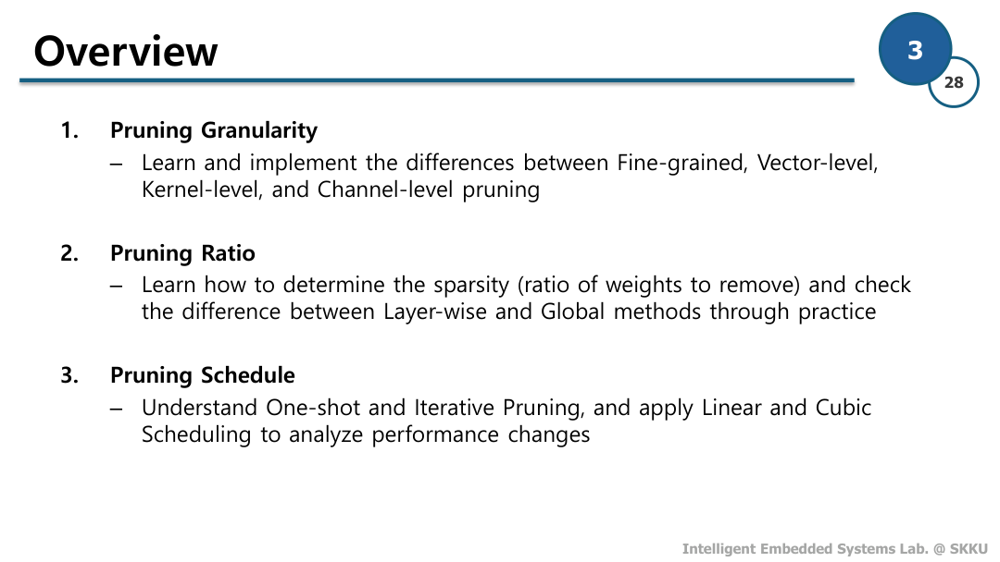
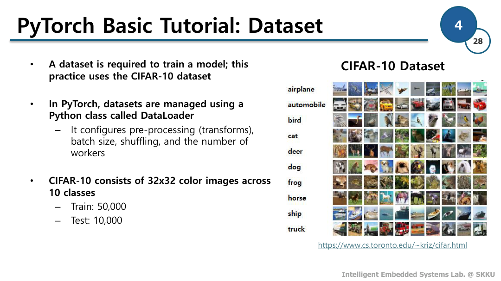
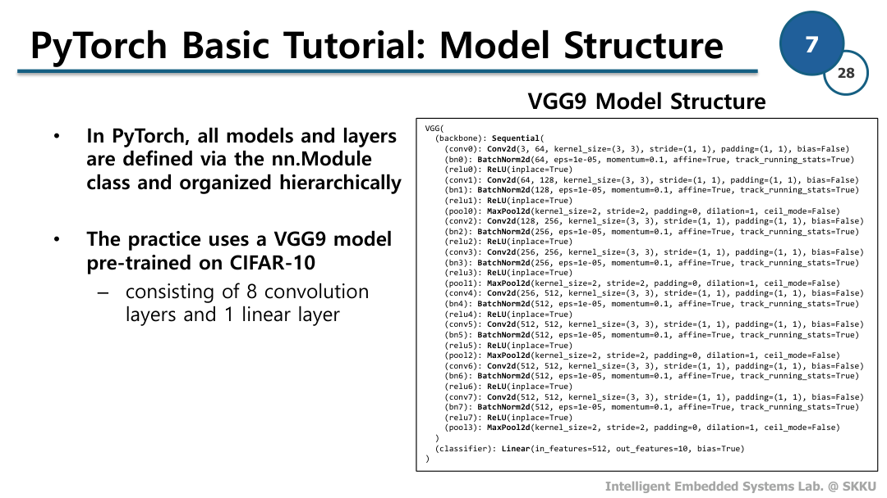
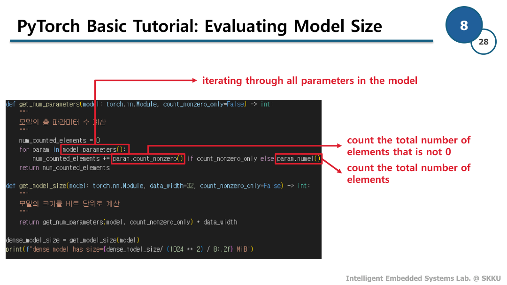
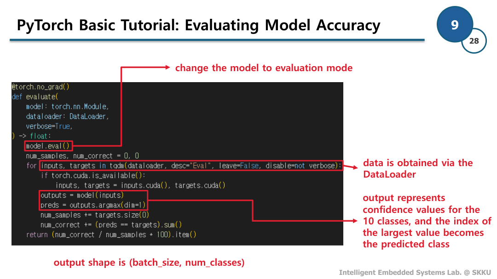
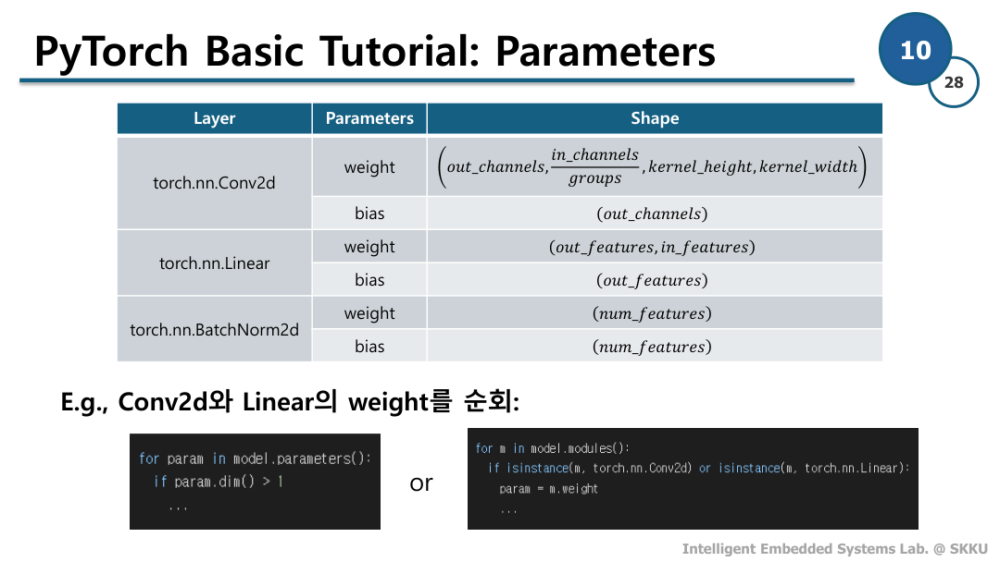
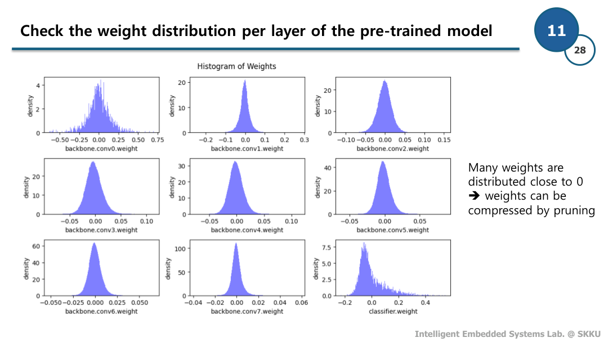
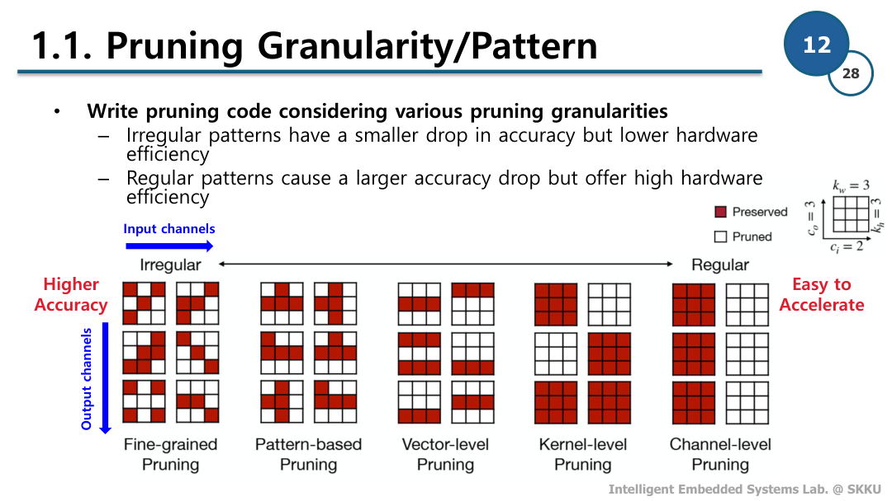
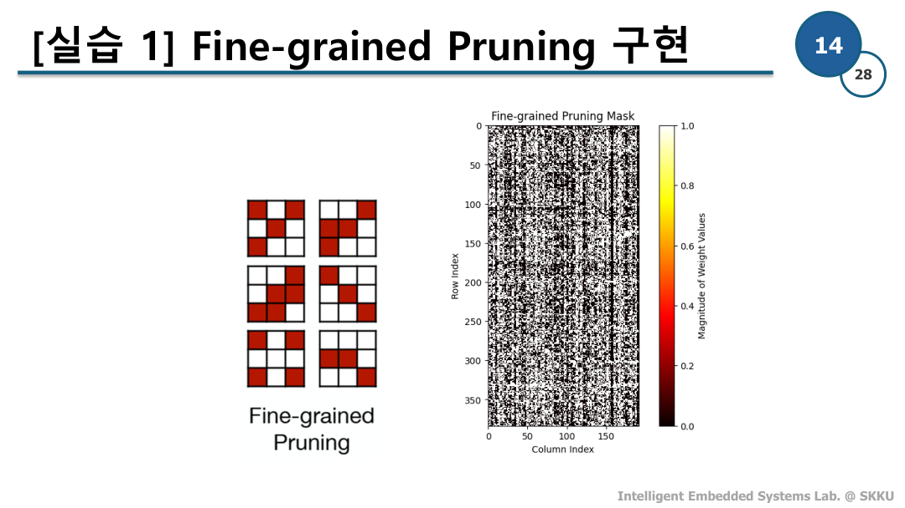
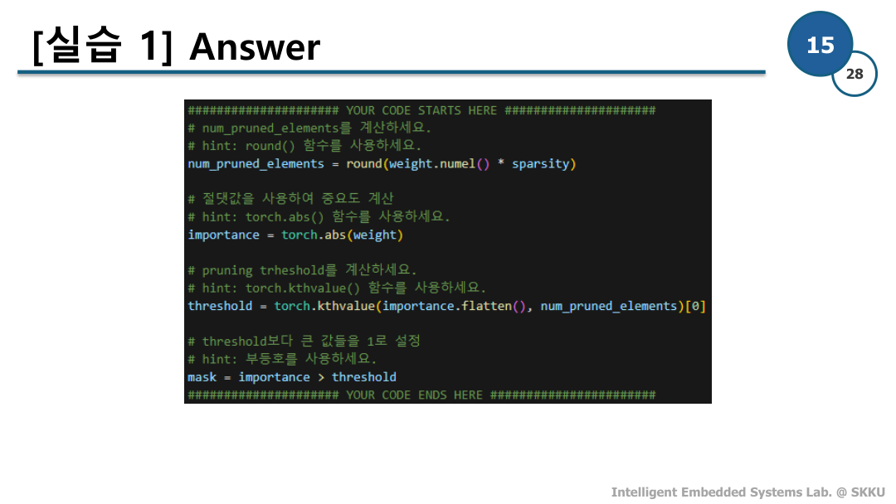
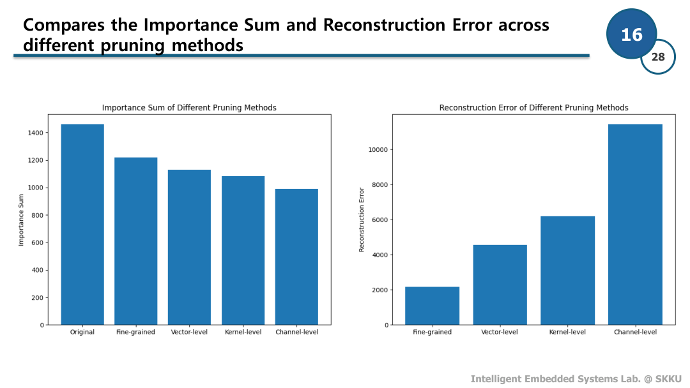
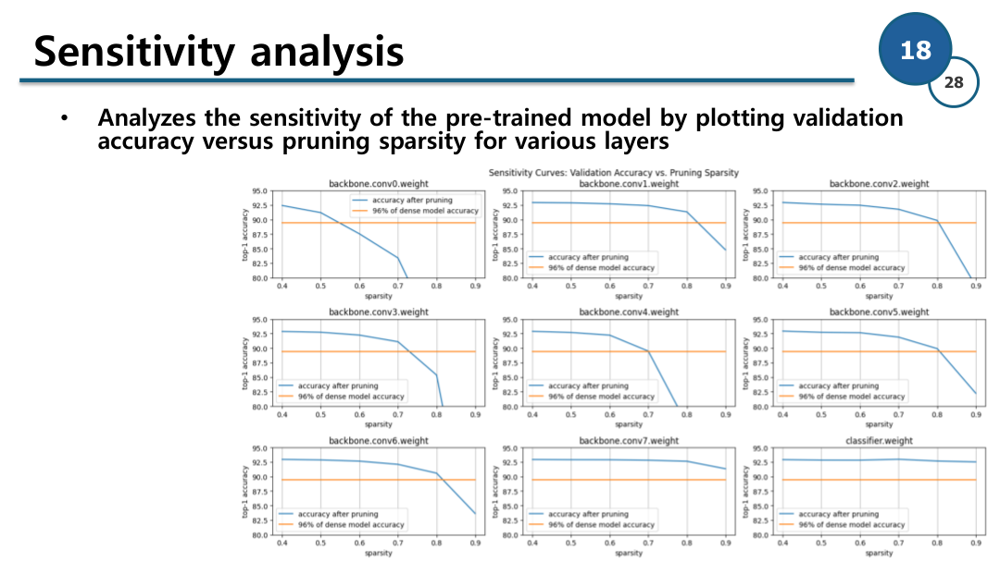
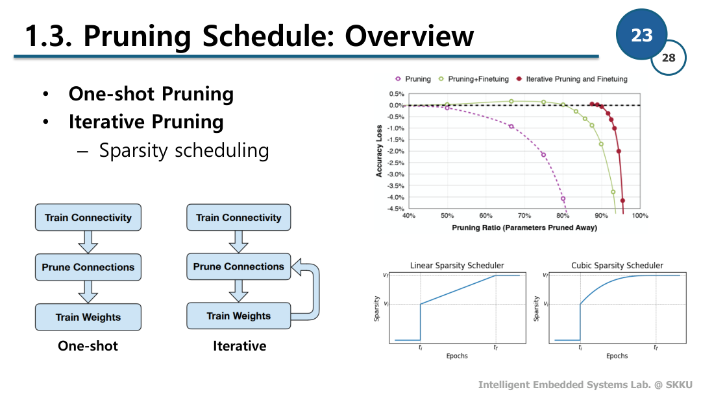
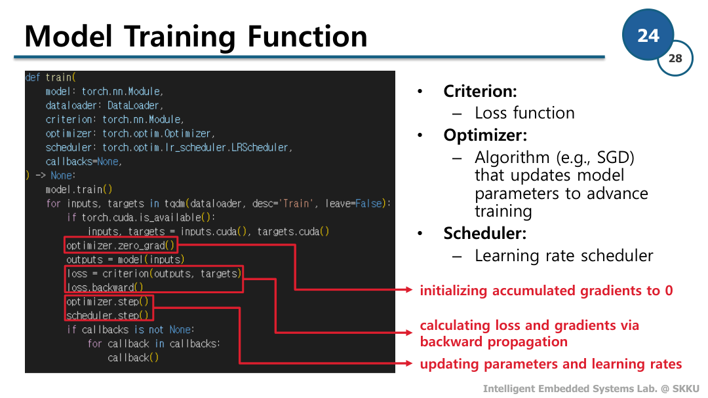
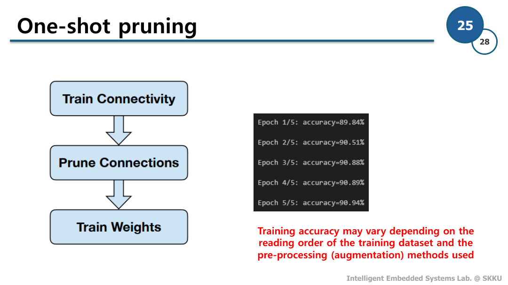
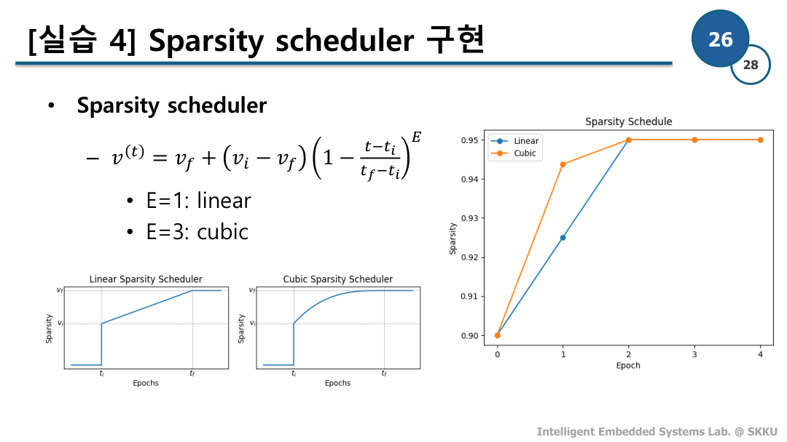
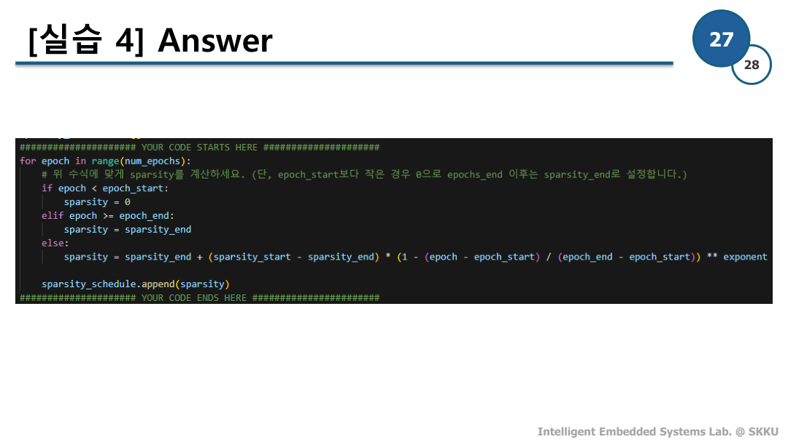
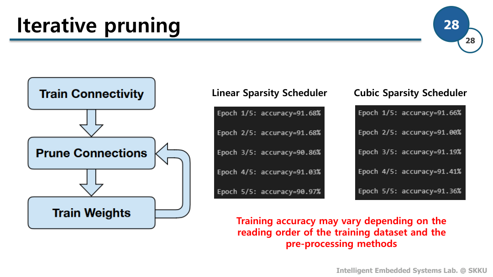
# Assignment 1. Pruning for CNN## Goals
본 실습은 CNN 모델의 다양한 Pruning 기법을 이해하고, 이를 구현하여 각 방법이 모델의 정확도와 효율성에 어떤 영향을 주는지 확인하는 것을 목표로 합니다.
## Contents
1. **Pruning Granularity:**
- Fine-grained, Vector-level, Kernel-level, Channel-level의 차이를 학습하고 구현합니다.
2. **Pruning Ratio:**
- 제거할 가중치의 비율(Sparsity)을 결정하는 방법을 배웁니다. Layer-wise와 Global 방식의 차이를 실습을 통해 확인합니다.
3. **Pruning Schedule:**
- One-shot Pruning 및 Iterative Pruning을 이해하고, Linear 및 Cubic Scheduling 방법을 적용하여 성능 변화를 분석합니다.# Setup다음 단계에 따라 실습 환경을 준비합니다.
- **필수 모듈 가져오기**: 실습을 위한 필요한 라이브러리들을 import 합니다.
- **Seed 설정**: 결과 재현성을 위해 난수 생성 Seed를 설정합니다.
- **CIFAR-10 데이터셋 준비**: CIFAR-10 데이터셋을 다운로드하고 DataLoader를 생성합니다.
- **사전 학습된 모델 로딩**: 미리 학습된 CNN 모델(VGG 기반)을 로드합니다.## CIFAR-10 데이터셋 준비
CIFAR-10 데이터셋을 다운로드하고 DataLoader를 설정합니다. CIFAR-10은 32x32 크기의 RGB 이미지로 구성된 데이터셋으로, 비행기, 자동차, 새 등 10개의 클래스에 대해 각각 6,000개씩 총 60,000개의 이미지를 포함하고 있습니다. 이 중 50,000개는 학습용(train), 10,000개는 테스트용(test)으로 분리되어 있습니다. 데이터 증강(Data Augmentation)을 위해 학습 데이터에는 RandomCrop과 RandomHorizontalFlip을 적용하고, DataLoader를 통해 배치 단위로 효율적인 학습이 가능하도록 구성합니다.image_size = 32
transforms = {
"train": Compose([
RandomCrop(image_size, padding=4),
RandomHorizontalFlip(),
ToTensor(),
]),
"test": Compose([
ToTensor(),
]),
}
# torchvision의 공식 다운로드 서버 에러를 피하기 위해
# Hugging Face Hub에서 CIFAR-10을 로드하는 커스텀 Dataset 클래스
class HFCIFAR10(Dataset):
def __init__(self, split, transform=None):
self.data = load_dataset("uoft-cs/cifar10", split=split)
self.transform = transform
self.targets = list(self.data["label"])
def __len__(self):
return len(self.data)
def __getitem__(self, idx):
# Subset에서 numpy.int64가 들어올 수 있으므로 Python int로 변환
idx = int(idx)
item = self.data[idx]
# Hugging Face CIFAR-10 field names: img, label
image = item["img"].convert("RGB")
label = item["label"]
if self.transform is not None:
image = self.transform(image)
return image, label
dataset = {split: HFCIFAR10(split=split, transform=transforms[split])
for split in ["train", "test"]}
dataloader = {
split: DataLoader(dataset[split], batch_size=512,
shuffle=(split=='train'),
num_workers=0, pin_memory=True)
for split in ['train', 'test']
}## 모델 로딩
사전 학습된 CNN 모델을 불러옵니다. 이 모델은 Pruning 기법을 적용하기 전 기준 모델로 사용됩니다. 본 실습에서는 VGG 구조의 모델을 사용하며, CIFAR-10 데이터셋으로 미리 학습된 가중치를 활용합니다. 모델의 연산 효율을 높이기 위해 GPU에서 실행되도록 설정합니다.TORCH_HUB_REPO = "SKKU-ESLAB/pytorch-models"
MODEL_NAME = "cifar10_vgg9_bn"
model = torch.hub.load(TORCH_HUB_REPO, MODEL_NAME, pretrained=True)
if torch.cuda.is_available():
model = model.cuda()
print(model)## 모델 크기 평가
모델의 총 파라미터 개수를 계산하여 모델의 크기를 평가합니다. 각 파라미터의 element 수를 더하여 총 개수를 구하고, 이를 통해 모델의 크기를 비트 단위로 변환합니다. 데이터 너비는 일반적으로 32비트(float)를 사용합니다. 이를 통해 모델이 차지하는 메모리 용량을 확인하고 프루닝의 필요성을 강조할 수 있으며, 프루닝 후 크기가 얼마나 감소했는지 정량적으로 평가할 수 있습니다.def get_num_parameters(model: nn.Module, count_nonzero_only=False) -> int:
"""
모델의 총 파라미터 수 계산
"""
num_counted_elements = 0
for param in model.parameters():
num_counted_elements += param.count_nonzero() if count_nonzero_only else param.numel()
return num_counted_elements
def get_model_size(model: nn.Module, data_width=32, count_nonzero_only=False) -> int:
"""
모델의 크기를 비트 단위로 계산
"""
return get_num_parameters(model, count_nonzero_only) * data_width
dense_model_size = get_model_size(model)
print(f"dense model has size={dense_model_size/ (1024 ** 2) / 8:.2f} MiB")## 모델의 정확도 평가
모델의 성능을 평가하기 위해 정확도를 측정합니다. 테스트 데이터셋을 사용하여 모델의 예측 정확성을 검증합니다. 모델 학습을 위한 `train` 함수와 성능 평가를 위한 `evaluate` 함수를 구현합니다. 이를 통해 프루닝 전후의 모델 정확도를 비교하여 성능 변화를 분석할 수 있습니다. 특히 프루닝으로 인한 정확도 손실과 모델 크기 감소의 trade-off 관계를 파악할 수 있습니다.def train(
model: nn.Module,
dataloader: DataLoader,
criterion: nn.Module,
optimizer: Optimizer,
scheduler: LambdaLR,
callbacks=None,
) -> None:
model.train()
for inputs, targets in tqdm(dataloader, desc='Train', leave=False):
if torch.cuda.is_available():
inputs, targets = inputs.cuda(), targets.cuda()
optimizer.zero_grad()
outputs = model(inputs)
loss = criterion(outputs, targets)
loss.backward()
optimizer.step()
scheduler.step()
if callbacks is not None:
for callback in callbacks:
callback()
@torch.no_grad()
def evaluate(
model: nn.Module,
dataloader: DataLoader,
verbose=True,
) -> float:
model.eval()
num_samples, num_correct = 0, 0
for inputs, targets in tqdm(dataloader, desc="Eval", leave=False, disable=not verbose):
if torch.cuda.is_available():
inputs, targets = inputs.cuda(), targets.cuda()
outputs = model(inputs)
preds = outputs.argmax(dim=1)
num_samples += targets.size(0)
num_correct += (preds == targets).sum()
return (num_correct / num_samples * 100).item()## 모델 가중치 값의 분포 확인
모델의 가중치 분포를 시각적으로 확인하겠습니다. 가중치 값들을 히스토그램으로 표현하여 분포를 파악할 수 있습니다. 이는 프루닝(Pruning) 대상을 선정하는데 중요한 기준이 됩니다. 예를 들어, 매우 작은 값을 가진 가중치들은 프루닝 과정에서 우선적으로 제거될 수 있습니다.
여기서 `param.dim() > 1` 조건은 2차원 이상의 파라미터만 검사한다는 의미입니다. CNN에서 파라미터는 다음과 같이 구성됩니다:
| Layer | Parameters | Shape |
|:---:|:---:|:---:|
| `torch.nn.Conv2d` | `weight` | $(out\_channels, \frac{in\_channels}{groups}, kernel\_height, kernel\_width)$ |
| | `bias` | $(out\_channels)$ |
| `torch.nn.Linear` | `weight` | $(out\_features, in\_features)$ |
| | `bias` | $(out\_features)$ |
| `torch.nn.BatchNorm2d` | `weight` | $(num\_features)$ |
| | `bias` | $(num\_features)$ |
프루닝의 주요 def plot_weight_distribution(model, bins=256, count_nonzero_only=False):
"""가중치 분포를 시각화하는 함수
Args:
model: 분석할 모델
bins: 히스토그램의 구간 수 (기본값: 256)
count_nonzero_only: 0이 아닌 가중치만 표시할지 여부 (기본값: False)
"""
# 3x3 서브플롯 생성
fig, axes = plt.subplots(3, 3, figsize=(10, 6))
axes = axes.ravel()
plot_index = 0
for name, param in model.named_parameters():
# 2차원 이상의 파라미터만 처리 (Conv2d, Linear 레이어의 가중치)
if param.dim() > 1:
ax = axes[plot_index]
# CPU로 데이터 이동 및 1차원으로 변환
param_data = param.detach().view(-1).cpu()
if count_nonzero_only:
# 0이 아닌 값만 선택
param_data = param_data[param_data != 0]
# 히스토그램 그리기
ax.hist(param_data, bins=bins, density=True,
color='blue', alpha=0.5)
# 축 레이블 설정
ax.set_xlabel(name)
ax.set_ylabel('density')
plot_index += 1
fig.suptitle('Histogram of Weights')
fig.tight_layout()
fig.subplots_adjust(top=0.925)
plt.show()
plot_weight_distribution(model)이로써 실습을 위한 기본적인 준비는 모두 마무리 되었습니다.## Reconstruction Error 계산 함수 정의
실습에 들어가기 앞서 **reconstruction error**를 계산하는 함수를 정의하겠습니다. Reconstruction error는 프루닝 전후 모델 출력의 차이를 측정하여 프루닝이 모델의 성능에 미치는 영향을 정량적으로 평가하는 지표입니다.
Input feature map $X$에 대해 원본 weight $W$와 pruning된 weight $\widehat{W}$ 사이의 reconstruction error는 다음 수식으로 계산됩니다:
${\left\Vert WX - \widehat{W}X \right\Vert}^2_2$
이 값이 작을수록 프루닝 후에도 원래 모델의 출력과 유사한 결과를 유지한다는 것을 의미합니다.def get_reconstuction_error(tensor1: torch.Tensor, tensor2: torch.Tensor) -> float:
return torch.sum((tensor1 - tensor2) ** 2).item()# 1.1. Pruning Granularity/Pattern
이 섹션에서는 Pruning을 수행할 때 다양한 granularity(세분성)를 적용하는 방법을 배웁니다. 각 granularity는 모델의 정확도(accuracy)와 하드웨어 효율성(hardware efficiency)에 영향을 미치므로, 적절한 선택이 중요합니다.## Pruning Granularity 소개
Pruning granularity는 Pruning이 적용되는 범위를 정의합니다. 다음과 같은 다양한 단위로 Pruning을 적용할 수 있습니다:
- **Fine-grained Pruning**: 가장 작은 단위인 개별 가중치를 대상으로 합니다.
- **Vector-level Pruning**: 가중치 벡터 단위로 Pruning을 수행합니다.
- **Kernel-level Pruning**: 컨볼루션 커널 전체를 대상으로 합니다.
- **Channel-level Pruning**: 전체 채널을 Pruning 대상으로 합니다.
각 단위는 Pruning이 모델의 구조와 성능에 미치는 영향을 다르게 하므로, 실험을 통해 각 경우의 효과를 비교해 볼 필요가 있습니다.## Pruning Pattern의 시각화
다음 그림은 다양한 Pruning pattern을 보여줍니다. 이를 통해 각 Pruning 기법의 특징을 시각적으로 이해할 수 있습니다.
본 실습에서는 가중치의 크기(Magnitude)를 기준으로 하는 중요도 점수를 사용합니다. Sparsity를 0.5로 설정하여 `model.backbone.conv1.weight`의 50%에 해당하는 가중치를 제거(Pruning)합니다. 이는 가중치의 절반을 0으로 만들어 모델을 희소화하는 과정입니다.## 가중치 분포 시각화
Pruning을 수행하기 전에 가중치의 분포를 시각화하여 중요한 가중치들을 파악하고 Pruning이 미치는 영향을 분석합니다. 아래 함수를 통해 가중치의 분포를 시각적으로 확인할 수 있습니다:## [실습 1] Fine-grained Pruning 구현
Fine-grained Pruning은 신경망의 가중치를 개별적으로 제거하는 기법입니다. 각 가중치의 크기(Magnitude)를 기준으로 중요도를 평가하고, 지정된 희소도(sparsity)에 따라 중요도가 낮은 가중치들을 0으로 만듭니다. 이를 통해 모델의 크기를 줄이고 연산량을 감소시킬 수 있습니다.
아래 빈칸을 채워 `prune_weight_fine_grained` 함수를 완성하세요.def prune_weight_fine_grained(weight: torch.Tensor, sparsity: float) -> None:
"""가중치 텐서에 대해 fine-grained pruning을 수행하는 함수
Args:
weight: pruning할 가중치 텐서
sparsity: pruning할 비율 (0~1 사이 값)
Returns:
pruning mask 텐서
"""
# sparsity 값을 0~1 사이로 제한
sparsity = min(1.0, max(0.0, sparsity))
# 특수한 경우 처리
if sparsity == 1.0: # 모든 가중치를 제거
weight.zero_()
return torch.zeros_like(weight)
elif sparsity == 0.0: # 모든 가중치를 유지
return torch.ones_like(weight)
##################### YOUR CODE STARTS HERE #####################
# 제거할 원소 개수를 계산하세요.
# hint: round() 함수를 사용하세요.
num_pruned_elements =
# 가중치의 중요도를 절댓값으로 importance 계산
# hint: torch.abs() 함수를 사용하세요.
importance =
# pruning trheshold를 계산하세요.
# hint: torch.kthvalue() 함수를 사용하세요.
threshold =
# threshold보다 큰 값들은 유지(1), 작은 값들은 제거(0)하는 마스크 생성
# hint: 부등호를 사용하세요.
mask =
##################### YOUR CODE ENDS HERE #######################
# 마스크를 적용하여 pruning 수행
weight.mul_(mask)
return mask
# 마스크 생성 및 시각화
mask_fine_grained = prune_weight_fine_grained(weight.clone(), prune_sparsity)
draw_weight_distribution(mask_fine_grained, title="Fine-grained Pruning Mask")## Vector-level Pruning
Vector-level Pruning은 가중치 벡터 단위로 Pruning을 수행하는 기법입니다. 이 방법은 fine-grained Pruning과 비교했을 때 구조적인 정보를 더 잘 보존할 수 있다는 장점이 있습니다. 각 가중치 벡터의 L1 norm(절대값의 합)을 기준으로 중요도를 평가하고, 중요도가 낮은 벡터들을 제거함으로써 Pruning을 수행합니다. 이러한 방식으로 네트워크의 구조적 특성을 유지하면서 모델을 경량화할 수 있습니다.def prune_weight_vector_level(weight: torch.Tensor, sparsity: float) -> None:
"""벡터 단위로 가중치를 프루닝하는 함수입니다.
Args:
weight: 프루닝할 가중치 텐서
sparsity: 프루닝할 비율 (0~1 사이 값)
Returns:
프루닝 마스크 텐서
"""
# sparsity 값을 0~1 사이로 제한
sparsity = min(1.0, max(0.0, sparsity))
# 특수한 경우 처리
if sparsity == 1.0: # 모든 가중치를 제거
weight.zero_()
return torch.zeros_like(weight)
elif sparsity == 0.0: # 모든 가중치를 유지
return torch.ones_like(weight)
# 제거할 벡터의 개수 계산
num_vectors = weight.shape[0] * weight.shape[1] * weight.shape[2]
num_pruned_vectors = round(num_vectors * sparsity)
# 각 벡터의 중요도를 절댓값 합으로 계산
importance = weight.abs().sum(dim=(3,), keepdim=True)
# pruning trheshold를 계산
threshold = torch.kthvalue(importance.flatten(), num_pruned_vectors)[0]
# threshold보다 큰 벡터는 유지(1), 작은 벡터는 제거(0)
mask = importance > threshold
# 마스크를 가중치와 동일한 크기로 확장
mask = mask.expand_as(weight)
# 마스크를 적용하여 프루닝 수행
weight.mul_(mask)
return mask
mask_vector_level = prune_weight_vector_level(weight.clone(), prune_sparsity)
draw_weight_distribution(mask_vector_level, title="Vector-level Pruning Mask")## Kernel-level Pruning
Kernel-level Pruning은 컨볼루션 커널을 기준으로 프루닝을 수행하는 방법입니다. 벡터 단위 프루닝보다 더 큰 구조적 단위로 프루닝을 수행하기 때문에 하드웨어 가속과 연산 최적화에 더 효과적입니다. 각 커널의 가중치 절댓값 총합을 중요도로 사용하여 불필요한 커널을 제거합니다.def prune_weight_kernel_level(weight: torch.Tensor, sparsity: float) -> None:
"""커널 단위로 가중치를 프루닝하는 함수
Args:
weight: 프루닝할 가중치 텐서 (out_channels, in_channels, kernel_h, kernel_w)
sparsity: 프루닝할 비율 (0~1 사이 값)
Returns:
프루닝 마스크 텐서
"""
sparsity = min(1.0, max(0.0, sparsity))
if sparsity == 1.0:
weight.zero_()
return torch.zeros_like(weight)
elif sparsity == 0.0:
return torch.ones_like(weight)
# 프루닝할 커널 수 계산
num_kernels = weight.shape[0] * weight.shape[1]
num_pruned_kernels = round(num_kernels * sparsity)
# 각 커널의 중요도를 절댓값 합으로 계산 (커널 크기에 대해 합산)
importance = weight.abs().sum(dim=(2, 3), keepdim=True)
# pruning trheshold를 계산
threshold = torch.kthvalue(importance.flatten(), num_pruned_kernels)[0]
# threshold보다 큰 커널은 유지(1), 작은 커널은 제거(0)
mask = importance > threshold
# 마스크를 가중치와 동일한 크기로 확장
mask = mask.expand_as(weight)
# 마스크를 적용하여 프루닝 수행
weight.mul_(mask)
return mask
mask_kernel_level = prune_weight_kernel_level(weight.clone(), prune_sparsity)
draw_weight_distribution(mask_kernel_level, title="Kernel-level Pruning Mask")## Channel-level Pruning
Channel-level Pruning은 입력 또는 출력 채널 전체를 Pruning 대상으로 합니다.
채널 단위로 프루닝을 수행하면 해당 채널과 관련된 모든 연산이 제거되므로 모델의 효율성을 향상시킬 수 있습니다.def prune_weight_channel_level(weight: torch.Tensor, sparsity: float) -> None:
"""채널 단위 프루닝을 수행하는 함수
Args:
weight: 프루닝할 가중치 텐서 (out_channels, in_channels, kernel_h, kernel_w)
sparsity: 프루닝할 비율 (0~1 사이 값)
Returns:
프루닝 마스크 텐서
"""
sparsity = min(1.0, max(0.0, sparsity))
if sparsity == 1.0:
weight.zero_()
return torch.zeros_like(weight)
elif sparsity == 0.0:
return torch.ones_like(weight)
# 프루닝할 채널 수 계산
num_channels = weight.shape[1]
num_pruned_channels = round(num_channels * sparsity)
# 각 채널의 중요도를 절댓값 합으로 계산
# (출력 채널, 커널 높이, 커널 너비에 대해 합산)
importance = weight.abs().sum(dim=(0, 2, 3), keepdim=True)
# pruning threshold를 계산
threshold = torch.kthvalue(importance.flatten(), num_pruned_channels)[0]
# threshold보다 큰 채널은 유지(1), 작은 채널은 제거(0)
mask = importance > threshold
# 마스크를 가중치와 동일한 크기로 확장
mask = mask.expand_as(weight)
# 마스크를 적용하여 프루닝 수행
weight.mul_(mask)
return mask
mask_channel_level = prune_weight_channel_level(weight.clone(), prune_sparsity)
draw_weight_distribution(mask_channel_level, title="Channel-level Pruning Mask")## 중요도 합 비교
각 프루닝 기법에 따라 제거된 가중치의 중요도 합을 비교합니다. 이를 통해 각 프루닝 방법이 얼마나 중요한 가중치를 제거하는지 파악할 수 있습니다. 중요도가 높은 가중치를 많이 제거할수록 모델의 성능 저하가 클 것으로 예상됩니다.## Reconstruction Error 비교
각 Pruning 기법을 적용한 후, 모델 출력의 reconstruction error를 비교합니다. 이를 통해 각 Pruning 방법이 모델의 출력에 미치는 영향을 정량적으로 평가할 수 있습니다. Reconstruction error가 클수록 원본 모델의 출력과 더 많이 달라졌음을 의미하며, 이는 해당 Pruning 방법이 모델의 성능에 더 큰 영향을 미칠 수 있음을 나타냅니다.# 1.2. Pruning Ratio- Layer별 민감도(Sensitivity) 분석
- 각 레이어의 중요도를 파악하기 위해 특정 레이어만 sparsity를 변화시키면서 정확도 변화를 측정
- 이를 통해 pruning에 민감한 레이어와 덜 민감한 레이어를 파악
- Non-uniform vs Uniform Pruning 비교
- Uniform: 모든 레이어에 동일한 pruning ratio 적용
- Non-uniform: 레이어별 민감도에 따라 global threshold 기반으로 다른 pruning ratio 적용
- 두 방식 간의 정확도와 모델 크기의 trade-off 비교 분석## Sensitivity 분석
각 레이어의 민감도를 분석하기 위해 다른 레이어는 고정한 상태에서 특정 레이어의 sparsity를 변화시키며 정확도 변화를 측정합니다. 이를 통해 각 레이어가 pruning에 얼마나 민감한지 파악할 수 있습니다.@torch.no_grad()
def sensitivity_scan(model, dataloader, scan_step=0.1, scan_start=0.4, scan_end=1.0, verbose=True):
"""
각 레이어의 민감도를 분석하기 위한 함수
Args:
model: 분석할 모델
dataloader: 평가에 사용할 데이터로더
scan_step: sparsity 증가 단위
scan_start: 시작 sparsity
scan_end: 종료 sparsity
verbose: 상세 출력 여부
Returns:
sparsities: 테스트한 sparsity 값들
accuracies: 각 레이어별 sparsity에 따른 정확도
"""
sparsities = np.arange(start=scan_start, stop=scan_end, step=scan_step)
accuracies = []
# 합성곱 레이어의 가중치만 선택
named_conv_weights = [(name, param) for (name, param) \
in model.named_parameters() if param.dim() > 1]
# 각 레이어별로 민감도 스캔 수행
for i_layer, (name, param) in enumerate(named_conv_weights):
param_clone = param.detach().clone() # 원본 가중치 백업
accuracy = []
# 각 sparsity 레벨에서 pruning 수행하고 정확도 측정
for sparsity in tqdm(sparsities, desc=f'scanning {i_layer}/{len(named_conv_weights)} weight - {name}'):
prune_weight_fine_grained(param.detach(), sparsity=sparsity)
acc = evaluate(model, dataloader, verbose=False)
if verbose:
print(f'\r sparsity={sparsity:.2f}: accuracy={acc:.2f}%', end='')
# restore
param.copy_(param_clone)
accuracy.append(acc)
if verbose:
print(f'\r sparsity=[{",".join(["{:.2f}".format(x) for x in sparsities])}]: ' + \
f'accuracy=[{", ".join(["{:.2f}%".format(x) for x in accuracy])}]', end='')
accuracies.append(accuracy)
return sparsities, accuracies
# 민감도 분석 실행
sparsities, accuracies = sensitivity_scan(
model, dataloader['test'], scan_step=0.1, scan_start=0.4, scan_end=1.0)## [실습 2] Sensitivity Analysis를 통한 Pruning 수행
Sensitivity analysis 결과를 바탕으로 각 레이어별 sparsity를 `custom_sparsity_dict`에 입력하세요.
위 그래프의 분석 결과를 토대로 아래와 같이 진행하면 됩니다다:
- 정확도 하락이 적은 레이어: 높은 sparsity 값 설정
- 정확도 하락이 큰 레이어: 낮은 sparsity 값 설정
이러한 레이어별 차등적인 pruning을 통해 모델의 전반적인 성능은 유지하면서 효율적인 압축을 달성하는 것이 목표입니다.class FineGrainedPruner:
"""Fine-grained pruning을 수행하는 클래스"""
def __init__(self, model, sparsity_dict):
"""
Args:
model: pruning할 모델
sparsity_dict: 레이어별 희소성 비율을 담은 딕셔너리
"""
self.masks = FineGrainedPruner.prune(model, sparsity_dict)
@torch.no_grad()
def apply(self, model):
"""마스크를 모델에 적용"""
for name, param in model.named_parameters():
if name in self.masks:
param *= self.masks[name]
@staticmethod
@torch.no_grad()
def prune(model, sparsity_dict):
"""
모델의 각 레이어에 대해 희소성 비율에 따라 가지치기 수행
Args:
model: 가지치기할 모델
sparsity_dict: 레이어별 희소성 비율을 담은 딕셔너리
Returns:
masks: 레이어별 마스크를 담은 딕셔너리
"""
masks = dict()
for name, param in model.named_parameters():
if param.dim() > 1: # we only prune conv and fc weights
masks[name] = prune_weight_fine_grained(param, sparsity_dict[name])
return masks
def get_uniform_sparsity_dict(sparsity):
"""
모든 레이어에 동일한 희소성 비율을 적용하는 딕셔너리 생성
Args:
sparsity: 적용할 희소성 비율
Returns:
sparsity_dict: 레이어별 동일한 희소성 비율을 담은 딕셔너리
"""
sparsity_dict = {name: sparsity for name, param in model.named_parameters() if param.dim() > 1}
return sparsity_dictdef get_model_sparsity(model: nn.Module) -> float:
"""
모델 전체의 sparsity 계산.
Args:
model: 스파시티를 계산할 모델
Returns:
float: 모델의 전체 스파시티 비율 (0~1 사이 값)
"""
num_nonzeros, num_elements = 0, 0
for param in model.parameters():
num_nonzeros += param.count_nonzero()
num_elements += param.numel()
return 1 - float(num_nonzeros) / num_elements
custom_sparsity_dict = {
##################### YOUR CODE STARTS HERE #####################
# Key는 수정하지 마시고, 각 layer의 sparsity 값을 조정하세요.
'backbone.conv0.weight': ,
'backbone.conv1.weight': ,
'backbone.conv2.weight': ,
'backbone.conv3.weight': ,
'backbone.conv4.weight': ,
'backbone.conv5.weight': ,
'backbone.conv6.weight': ,
'backbone.conv7.weight': ,
'classifier.weight':
##################### YOUR CODE ENDS HERE #######################
}
# 프루닝 적용 및 평가
pruner = FineGrainedPruner(model, custom_sparsity_dict)
pruner.apply(model)
custom_pruned_model_accuracy = evaluate(model, dataloader['test'])
custom_sparsity = get_model_sparsity(model)
model.recover_model()
# 결과 출력
print(f"custom_pruned_model has accuracy={custom_pruned_model_accuracy:.2f}%")
print(f"Model sparsity: {custom_sparsity:.3f}")Sensitivity analysis를 통한 pruning 결과와 비교하기 위해 모든 레이어에 uniform sparsity를 적용했을 때의 accuracy를 측정합니다.## [실습 3] Global Magnitude Pruning 구현
이 실습에서는 Global Magnitude Pruning을 구현합니다. Global Magnitude Pruning은 모델의 모든 가중치를 하나의 집합으로 간주하고, 가중치의 절대값을 기준으로 중요도를 평가하여 전체 모델에서 가장 작은 가중치를 제거하는 방식입니다. 이는 각 레이어별로 균일한 비율로 프루닝하는 것이 아니라, 전체 모델에서 가중치의 크기에 따라 프루닝을 수행합니다.
**구현 과정:**
1. 모든 레이어의 가중치를 하나의 벡터로 통합
2. 가중치의 절대값으로 중요도 계산
3. 프루닝 비율에 따른 임계값 설정
4. 임계값 미만의 가중치를 제거하는 마스크 생성 및 적용
이러한 방식으로 모델의 파라미터를 효율적으로 줄이면서도 중요한 정보는 보존할 수 있습니다. 결과적으로 모델 크기와 연산량을 감소시키면서 성능 저하를 최소화하는 것이 목표입니다.
아래 빈칸을 채워 `FineGrainedPrunerV2` 클래스를 완성하세요.class FineGrainedPrunerV2:
def __init__(self, model, sparsity, global_prune=False):
"""
전역 또는 레이어별 프루닝을 위한 프루너 클래스
Args:
model: 프루닝할 모델
sparsity: 프루닝 비율 (0~1)
global_prune: 전역 프루닝 여부
"""
self.masks = FineGrainedPrunerV2.prune(model, sparsity, global_prune)
@torch.no_grad()
def apply(self, model):
"""프루닝 마스크를 모델에 적용"""
for name, param in model.named_parameters():
if name in self.masks:
param *= self.masks[name]
@staticmethod
@torch.no_grad()
def prune(model, sparsity, global_prune):
"""
전역 또는 레이어별 프루닝 수행
Args:
model: 프루닝할 모델
sparsity: 프루닝 비율 (0~1)
global_prune: 전역 프루닝 여부
Returns:
masks: 프루닝 마스크 딕셔너리
"""
masks = dict()
if global_prune:
# 모든 2D 이상의 파라미터를 1차원으로 변환하여 수집
parameters_to_prune = []
for name, param in model.named_parameters():
if param.dim() > 1: # conv, fc 레이어만 프루닝
parameters_to_prune.append(param.view(-1))
##################### YOUR CODE STARTS HERE #####################
# 모든 weight를 하나의 텐서로 결합해주세요..
# hint: torch.cat()을 사용하세요.
all_weights =
# all_weights를 대상으로 global threshold를 구해주세요.
num_elements =
num_zeros =
importance =
threshold =
##################### YOUR CODE ENDS HERE #######################
# threshold 기반 마스크 생성
for name, param in model.named_parameters():
if param.dim() > 1:
mask = torch.abs(param.data) > threshold
masks[name] = m# 1.3. Pruning Schedule이 섹션에서는 Pruning 스케줄링을 구현하고, 모델의 Fine-tuning과 함께 Pruning을 진행합니다. Pruning 스케줄링은 모델 학습 중 특정 시점에 가중치를 제거하는 체계적인 접근 방식입니다. 이를 통해 모델의 학습 과정에서 점진적으로 Pruning을 적용하여 성능 저하를 최소화하면서 모델 크기를 효과적으로 줄일 수 있습니다.
**주요 Pruning 스케줄 방식:**
- **One-shot Pruning**: 목표 Pruning 비율을 한 번에 적용한 후, Fine-tuning으로 성능을 회복합니다.
- **Iterative Pruning**: 여러 단계에 걸쳐 점진적으로 Pruning을 수행합니다. 각 단계마다 일정 비율의 가중치를 제거하고 학습을 통해 모델이 새로운 구조에 적응하도록 합니다.
**Iterative Pruning의 스케줄링 방법:**
- **Linear Sparsity Scheduler**: Pruning 비율을 시간에 따라 선형적으로 증가시킵니다.
- **Cubic Sparsity Scheduler**: Pruning 비율을 시간에 따라 세제곱 비율로 증가시켜, 초기에는 급격하게, 후반에는 완만하게 증가시킵니다.
이러한 스케줄러들은 모델이 Pruning에 점진적으로 적응할 수 있게 하여, 최종적으로 원래의 성능을 최대한 유지할 수 있도록 합니다. Pruning 스케줄은 모델의 특성과 요구사항에 맞춰 조정될 수 있으며, 이를 통해 모델의 성능과 효율성의 균형을 맞출 수 있습니다.## One-shot Pruning
실습 3에서 구현한 `FineGrainedPrunerV2`를 사용하여 One-shot Pruning을 구현합니다.
목표 sparsity를 95%로 설정하고 5 epoch 동안 fine-tuning을 진행합니다.
학습에 사용되는 주요 구성 요소:
- Optimizer: SGD (learning rate=0.01, momentum=0.9, weight_decay=1e-4)
- Scheduler: CosineAnnealingLR
- Loss function: CrossEntropyLossnum_finetune_epochs = 5
target_sparsity = 0.95
optimizer = torch.optim.SGD(model.parameters(), lr=0.01, momentum=0.9, weight_decay=1e-4)
scheduler = torch.optim.lr_scheduler.CosineAnnealingLR(optimizer, num_finetune_epochs * len(dataloader['train']))
criterion = nn.CrossEntropyLoss()
pruner = FineGrainedPrunerV2(model, target_sparsity, global_prune=True)
print(f"Finetuning Fine-grained Pruned Sparse Model")
for epoch in range(num_finetune_epochs):
train(model, dataloader['train'], criterion, optimizer, scheduler,
callbacks=[lambda: pruner.apply(model)])
accuracy = evaluate(model, dataloader['test'])
print(f" Epoch {epoch+1}/{num_finetune_epochs}: accuracy={accuracy:.2f}%")
model.recover_model()## [실습 4] Sparsity Scheduler 구현
이 실습에서는 시간에 따른 Pruning 비율을 조절하는 다음 2가지 Sparsity Scheduler를 구현합니다:
- **Linear sparsity scheduler**: $v^{(t)} = v_f + \left(v_i - v_f\right)\left(1 - \frac{t - t_i}{t_f - t_i}\right)$
- 시간에 따라 선형적으로 sparsity가 증가
- **Cubic sparsity scheduler**: $v^{(t)} = v_f + \left(v_i - v_f\right)\left(1 - \frac{t - t_i}{t_f - t_i}\right)^3$
- 시간에 따라 세제곱 비율로 sparsity가 증가
아래 빈 칸을 채워 `get_sparsity_schedule` 함수를 완성하세요.def get_sparsity_schedule(num_epochs: int,
epoch_start: int,
epoch_end: int,
sparsity_start: float,
sparsity_end: float,
exponent: int,
) -> List[float]:
"""
스파시티 스케줄을 생성하는 함수입니다.
Args:
num_epochs: 전체 에폭 수
epoch_start: 스파시티 스케줄링 시작 에폭
epoch_end: 스파시티 스케줄링 종료 에폭
sparsity_start: 시작 스파시티 값
sparsity_end: 종료 스파시티 값
exponent: 스케줄링 지수 (1: linear, 3: cubic)
Returns:
각 에폭별 스파시티 값 리스트
"""
sparsity_schedule = []
##################### YOUR CODE STARTS HERE #####################
for epoch in range(num_epochs):
# 위 수식에 맞게 sparsity를 계산하세요. (단, epoch_start보다 작은 경우 0으로 epochs_end 이후는 sparsity_end로 설정합니다.)
if epoch < epoch_start:
sparsity =
elif epoch >= epoch_end:
sparsity =
else:
sparsity =
sparsity_schedule.append(sparsity)
##################### YOUR CODE ENDS HERE #######################
return sparsity_schedule
# Linear sparsity schedule
# linear_sparsity_schedule = [0.9, 0.925, 0.95, 0.95, 0.95]
linear_sparsity_schedule = get_sparsity_schedule(num_finetune_epochs, 0, 2, 0.9, target_sparsity, 1)
print("Linear sparsity schedule:", linear_sparsity_schedule)
# Cubic sparsity schedule
# cubic_sparsity_schedule = [0.9, 0.94375, 0.95, 0.95, 0.95]
cubic_sparsity_schedule = get_sparsity_schedule(num_finetune_epochs, 0, 2, 0.9, target_sparsity, 3)
print("Cubic sparsity schedule:", cubic_sparsity_schedule)## Iterative Pruning
Iterative Pruning은 모델의 가중치를 한 번에 제거하는 대신 여러 단계에 걸쳐 점진적으로 제거하는 방법입니다. 각 단계에서 일정 비율의 가중치를 제거한 후 모델을 재학습시켜 남은 가중치들이 제거된 가중치를 보완할 수 있도록 합니다.
이때 가중치를 제거하는 비율을 조절하는 방법으로 Linear와 Cubic Sparsity Scheduler를 사용할 수 있습니다. Cubic Scheduler는 초기에는 빠르게 가중치를 제거하다가 후반부로 갈수록 천천히 제거하는 방식을 사용합니다. 이는 모델이 후반에 중요한 가중치를 신중하게 제거할 수 있도록 시간을 더 많이 주기 때문에, Linear Scheduler에 비해 일반적으로 더 좋은 성능을 보입니다.optimizer = torch.optim.SGD(model.parameters(), lr=0.01, momentum=0.9, weight_decay=1e-4)
scheduler = torch.optim.lr_scheduler.CosineAnnealingLR(optimizer, num_finetune_epochs * len(dataloader['train']))
criterion = nn.CrossEntropyLoss()
print(f"Finetuning Fine-grained Pruned Sparse Model with linear sparsity scheduler")
for epoch in range(num_finetune_epochs):
pruner = FineGrainedPrunerV2(model, linear_sparsity_schedule[epoch], global_prune=True)
train(model, dataloader['train'], criterion, optimizer, scheduler,
callbacks=[lambda: pruner.apply(model)])
accuracy = evaluate(model, dataloader['test'])
print(f" Epoch {epoch+1}/{num_finetune_epochs}: accuracy={accuracy:.2f}%")
model.recover_model()optimizer = torch.optim.SGD(model.parameters(), lr=0.01, momentum=0.9, weight_decay=1e-4)
scheduler = torch.optim.lr_scheduler.CosineAnnealingLR(optimizer, num_finetune_epochs * len(dataloader['train']))
criterion = nn.CrossEntropyLoss()
print(f"Finetuning Fine-grained Pruned Sparse Model with cubic sparsity scheduler")
for epoch in range(num_finetune_epochs):
pruner = FineGrainedPrunerV2(model, cubic_sparsity_schedule[epoch], global_prune=True)
train(model, dataloader['train'], criterion, optimizer, scheduler,
callbacks=[lambda: pruner.apply(model)])
accuracy = evaluate(model, dataloader['test'])
print(f" Epoch {epoch+1}/{num_finetune_epochs}: accuracy={accuracy:.2f}%")
model.recover_model()